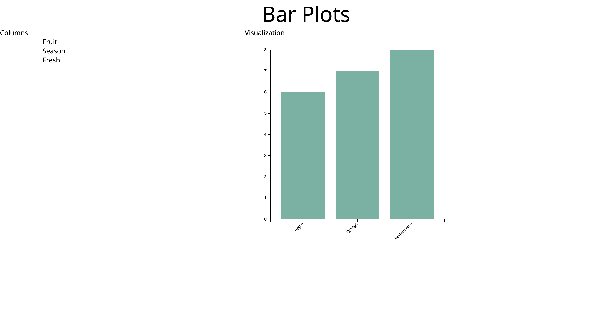
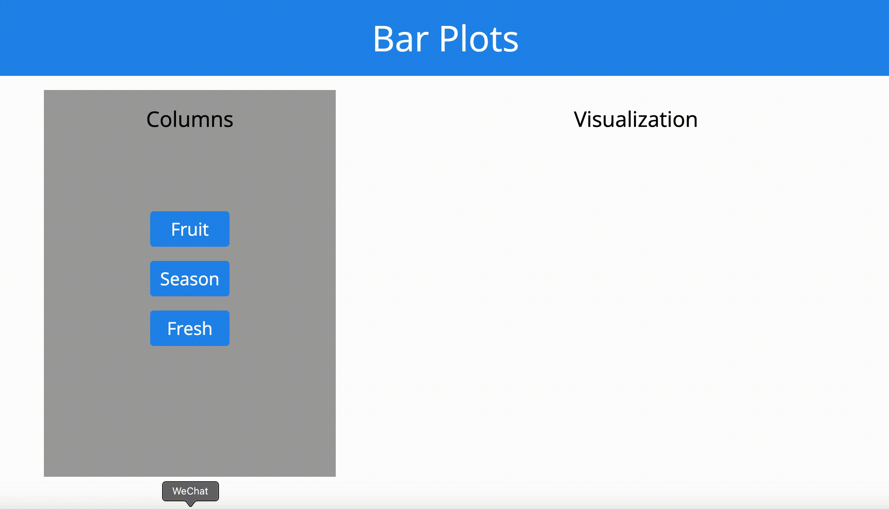

This site can help you view a bar plot of category data type in a sample csv. You can click on the column names displayed on the left and see a simple bar plot on the right using d3.
I would like to learn some d3 knowledge. Therefore, I choose data visualization path in this assignment. Also, I want to make such visualization have some functionality to interact with users. Therefore, I am trying to make the site interactive while users are trying to view each column of certain dataset.
I first build up the architecture of html along with some loop in js to mimic adding columns name from dataset to the html elements. I utilize animejs for a more fancy way to introduce these column names. After that, I started building the data visualizations using d3. I follow some code examples online and build the bar plot by following procedures: create svg, set up the size of the data viz canva, create axes, and finally create bars using rectangles.
For the final step, I polish my site with some css adjustions. I created the sample data just for the ease of data importing. I also uploaded the data online so that there would be no error while d3 is fetching the data through url.
One of the issues is at the final step of deployment. I tested my site successfully in the local but failed to do so after deployment on gh pages. I did some research and figured out that d3's csv function need to accept an url for the data for the following process. Therefore, it can't accept local data files (saved in hard drive). That is why I upload my data in a new github repository.
I also have a hard time figuring out the code sequence in javascript using d3, because d3 processes the data asyncronously.